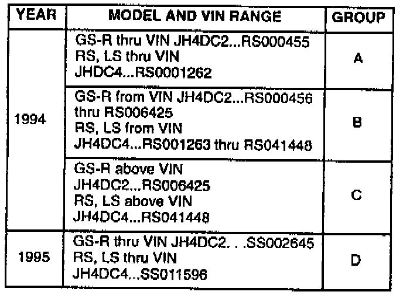
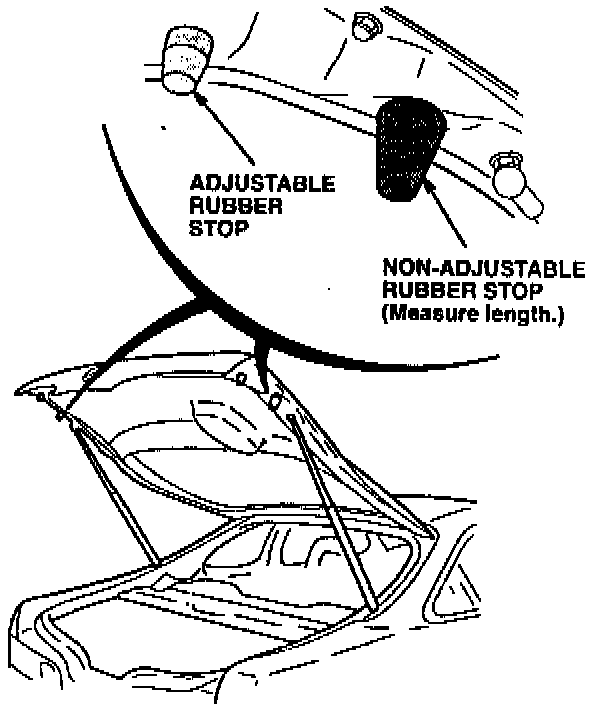
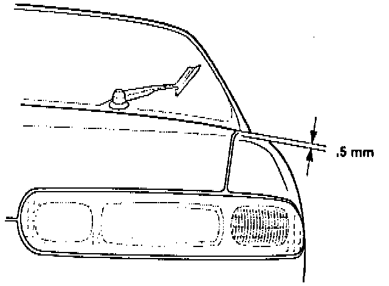
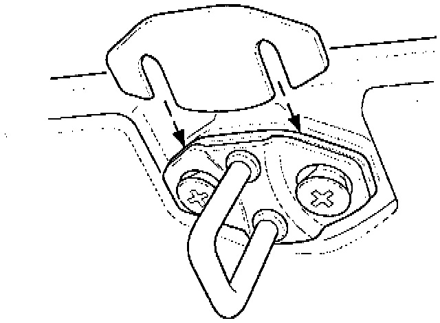
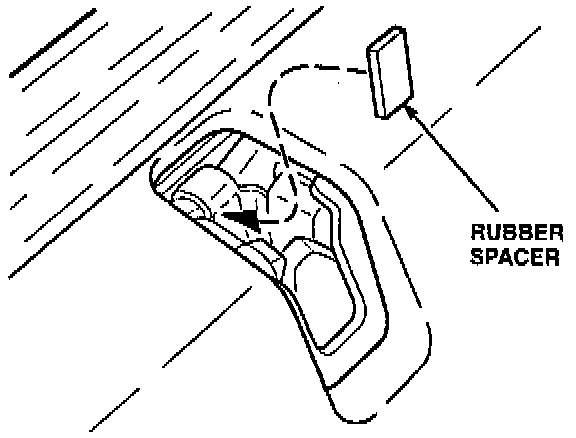
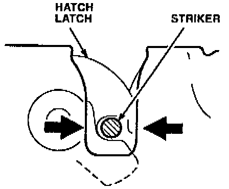
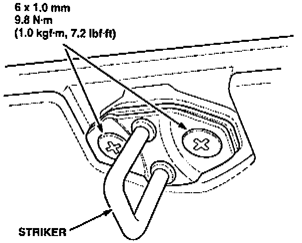
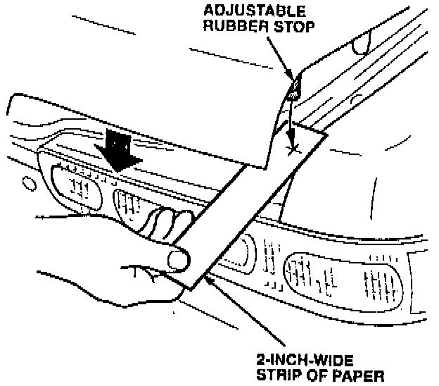
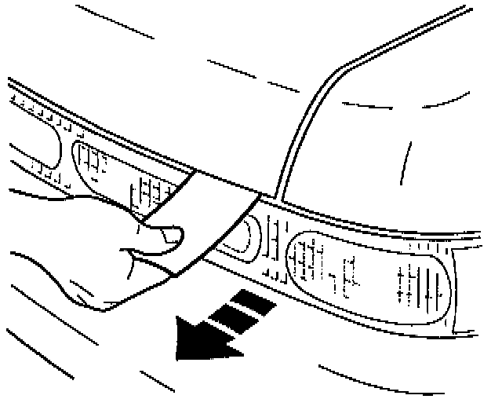

Rear Hatch Hard To Close
November 15, 1994YEAR
1994-95 [NEW]
MODEL
INTEGRA
VIN APPLICATION
ALL 3-DOOR
BULLETIN NO.
94-OO9
Hatch Hard to Close
(Supersedes 94-009, dated August 16, 1994)
SYMPTOM
Excessive force is needed to get the hatch to close and latch.
PROBABLE CAUSE
^ Inflexibility in the rubber stops.
^ The striker is not adjusted properly.
CORRECTIVE ACTION [NEW]

Using the VIN of the vehicle, select the proper Group. Perform only the repair steps that apply to that group.

1. Groups B, C, D Only: Measure the length of the non-adjustable rubber stops on the hatch. If they are 28 mm long, replace them with the 24 mm rubber stops listed under PARTS INFORMATION.
2. All Groups: Remove the adjustable rubber stops. Close the hatch.

3. All Groups: Measure the difference in height between the hatch and the fender.

4. All Groups: Install the appropriate shim or shims behind the striker to get the hatch to sit 0.5 mm above the tender.
5. All Groups: Move the striker forward as far as it will go. Tighten the striker mounting screws partially, just enough so that it will move when tapped.

6. All Groups: Insert a rubber spacer (see PARTS INFORMATION) into the latch assembly so it rests against the back of the housing.
7. All Groups: Gently close the hatch until it latches.
8. All Groups: From inside the car, tap the striker backward until it contacts the rubber spacer.

9. All Groups: Center the striker in the latch.

10. All Groups: Open the hatch and tighten the striker screws to 9.8 N-m (1.0 kg-m, 7.2 lb.ft). Remove the rubber spacer and save it.
11. Groups A and B only: Replace the adjustable rubber stops with the new stops listed under PARTS INFORMATION. Screw the stops in as far as they will go.
12. Groups C and D only: Reinstall the original adjustable rubber stops. Screw the stops in as far as they will go.

13. All Groups: Place a Strip of paper over the contact area for the adjustable stop, then close the hatch fully.

14. All Groups: Pull on the paper strip. If you can pull it out, open the hatch and adjust the rubber stop out one-quarter turn. Repeat this until you cannot pull the paper out without opening the hatch.
15. All Groups: Repeat steps 13 and 14 on the other side.
PARTS INFORMATION
Rubber spacer: P/N 83416-SR3-308
Adjustable rubber stop
(2 required): P/N 74828-ST7-000
24 mm Non-adjustable
rubber stop (2 required): P/N 74827-SK7-OOO
Shim, 1: P/N 83307-SD2-900
Shim, 2 mm: P/N 83307-SD2-OOO
WARRANTY CLAIM INFORMATION
In warranty:
The normal warranty applies.
Out of warranty:
Any repair performed after warranty expiration may be eligible for goodwill consideration by the District Technical Manager or your Zone Office. You must request consideration, and get a decision, before starting work.
Operation number: 823115
Flat rate time: 0.6 hour [NEW]
Failed P/N: P/N 74828-SK7-000
Defect code: 074
Contention code: B02